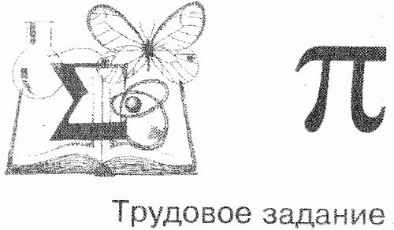

В былые годы предполагалось, что команды школьников участвуют в обеспечении своей жизнедеятельности. Даже в таком комфортабельном месте, как «Горный», командам доверяли ответственные дела.
|  |
|
Вашей команде оказано большое доверие и дано трудовое задание: Украшение домика БХО; Подготовка фойе столовой (фотовыставка и место регистрации гостей и ветеранов). |
Другим ответственным мероприятием этого года стала организация заключительного костра. Мы с ребятами-химиками принесли хорошее брёвнышко и вкопали его вертикально. Затем положили остальные дрова в форме шалаша. У нас получился очень высокий костёр в лучших традициях какого-нибудь «Орлёнка». И этот костёр был действительно большим. Совместная работа научила нас неформальнее понимать друг друга. Например, когда школьники уронили мне на ногу длинное полено, я был в большей степени откровенен с ними, нежели интеллигентен, и тем не менее я ощутил понимание с их стороны.
Когда за десять минут перед началом заключительного мероприятия Андрей Лученков с большими внимательными глазами подозвал меня и спросил, не я ли архитектор этого произведения, всё моё существо лучилось гордостью за этот совместный командный проект, перекрывший предыдущие летнешкольные достижения в этом направлении. Я с замиранием сердца признался, и услышал тихое «...! Это же на кого-нибудь свалится!»
Да, я был низвергнут с Олимпа славы и обещал, что всё стоит крепко. Действительно, вкопали мы основное бревно сантиметров на сорок, и толкания палкой, а также попинывания конструкции уже горящего к тому времени костра со стороны дирекции в нужном направлении вовсе не приводили к опрокидыванию сооружения. В конце концов большая часть приваленых стволов всё же была обрушена, и лишь чернеющее центральное бревно напоминало о серьёзной работе. Школьникам же и сам костёр понравился, и попытки его опрокинуть они сочли забавным летнешкольным шаманством.